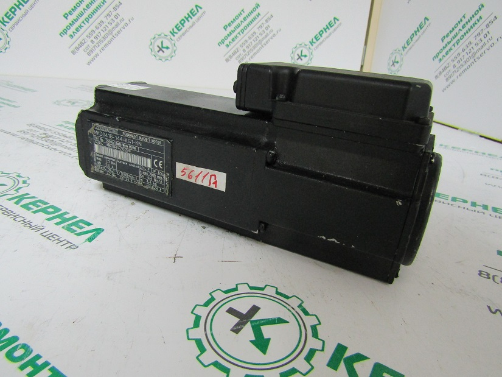

Серводвигатели(сервомоторы). Теоретическая часть. Некоторые принципы проектирования.
Введение. Немного истории
Пройден серьёзный путь развития от открытий М.Фарадея до современных генераторов и электродвигателей. Сохраняя основные принципы устройства, значительно изменяется конструктив, характеристики работы и ТЭП(технико-экономические показатели).
Отечественное электромашиностроение начало свое развитие с 1917 года, в те времена была задача быстрого прохождения по этому пути развития, сроки были сжатыми, а планы большими.
Поначалу, крепнущие заводы электромашиностроения производили недостаточно унифицированные серии электродвигателей, технические данные не совпадали, конструкции различались. Всё это предсказуемо приводило к трудностям покупателей при замене запчастей. Ремонт электродвигателя был куда более сложной задачей. Так появились унифицированные серии.
Единый стандарт
С появлением единой технологии произошло и значительное улучшение качества. Были выработаны единые конструктивные требования к изготовлению на производстве, различным параметрам, допускам по размерам и средствам производства. Стало проще разобраться с материалами и заготовками и вообще купить, и обслуживать промышленное электрооборудование.
Следующим этапом стала работа на экспорт. Национальные стандарты согласовывались уже на международной основе. Наводились научно-технические связи.
Проектирование серводвигателей и прочего электрооборудования
При проектировании следует в обязательном порядке руководствоваться требованиями Российских стандартов, а также рекомендациями ИСО и МЭК. Фактические рабочие параметры проектируемого оборудования определяются режимом его работы и должны ему соответствовать. ГОСТ 183 определяет рабочий режим с обозначениями от S1 до S8. Самым распространённым является продолжительный номи¬нальный режим работы, он обладает достаточной продолжитель¬ностью работы машины, для получения установив¬шейся температуры всех частей при постоянной внешней нагрузке – условно обозначается S1.
Номинальные мощности для машин на переменном и постоянном токе регулируются ГОСТ 12139. По ГОСТ номинальные мощности соответствуют работе электрических машин при номинальных значениях напряже¬ния, коэффициента мощности, частоты вращения, частоты переменного тока, при условиях и режимах работы, определенных стандартами.
Электрические машины имеют разные варианты обеспечения защиты от негативных внешних факторов. Необходимо создать должную безопасность работающему персоналу от прикосновения к частям механизма, которые вращаются или находятся под напряжением, а кроме того и защитить саму машину от попадания всякого мусора или влаги. Степень защиты классифицируется в соответствии с ГОСТ 14254. Стандарт создан с учётом рекомендаций МЭК 34- 5.
В соответствии с вышеуказанными документами обозначение IР это первые буквы международного обозначения степеней защиты Protection и Internation, после латинских букв в обозначении идут цифры. В цифровом обозначении первый номер определяет степень защиты от проникновения твердых тел в ма¬шину.
Конструктивные особенности и способ изготовления обеспечивают возможность сохранять рабочие характеристики при воздействии сложных климатических факторов при работе вне помещения.
ГОСТы 15150, 15543 определяются изготовление машин, категории их размещения, условия использования, хранения и транспортировки в условиях различных климатических воздействий: влажность, температура, запыленность, воздействие солнечных лучей, атмосферные осадки.
Для каждого вида климата лучше использовать оборудование с соответствующим классом. Техника для местностей с умеренным климатом имеет обозначение У, а для суровых холодов больше подойдёт обозначение ХЛ. Использование оборудования в соответствии с температурным режимом работы, для которого оно предназначено, может значительно продлить срок службы.
Цифра 4 в обозначении говорит о том, что машины следует размещать в помещениях, обладающих отоплением и вентиляцией. Для цифры 3 подойдут помещения с наличием естественной вентиляции.
Сначала в обозначении идут буквы, а затем уже цифры. Так пользователь понимает в каком климате может использовать промышленное оборудование.